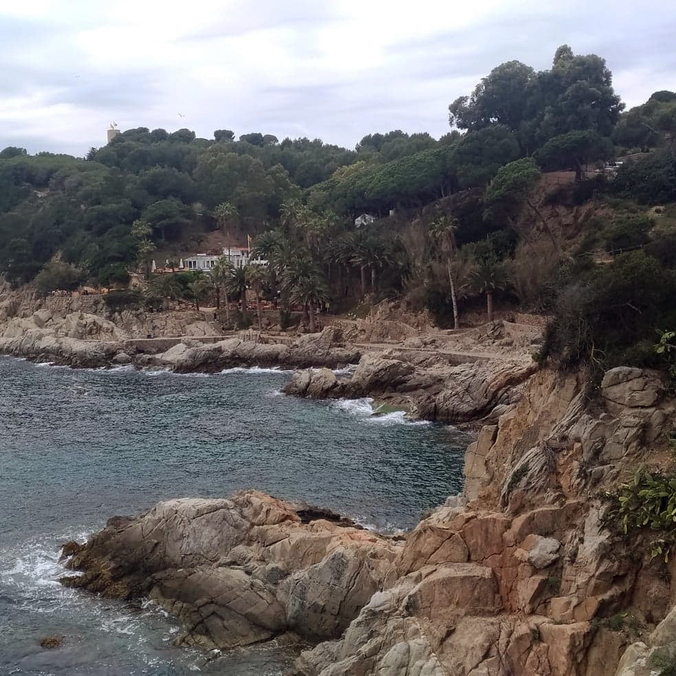
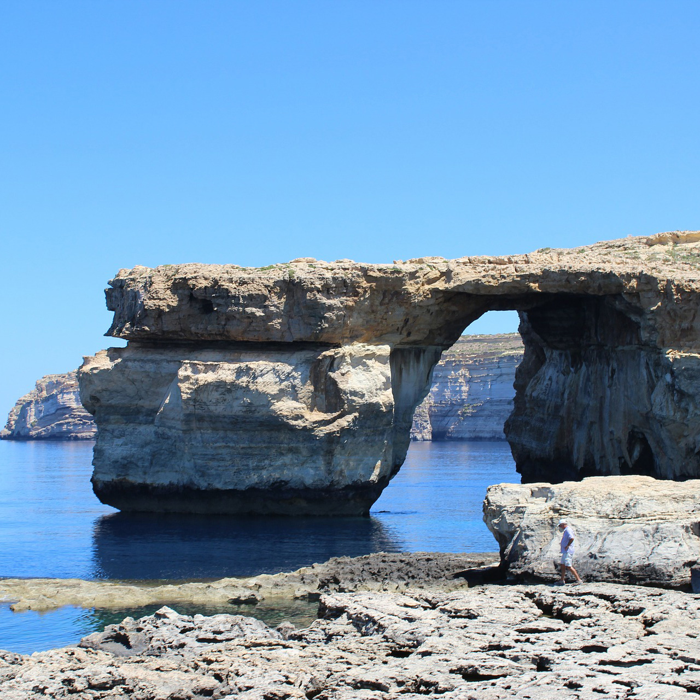
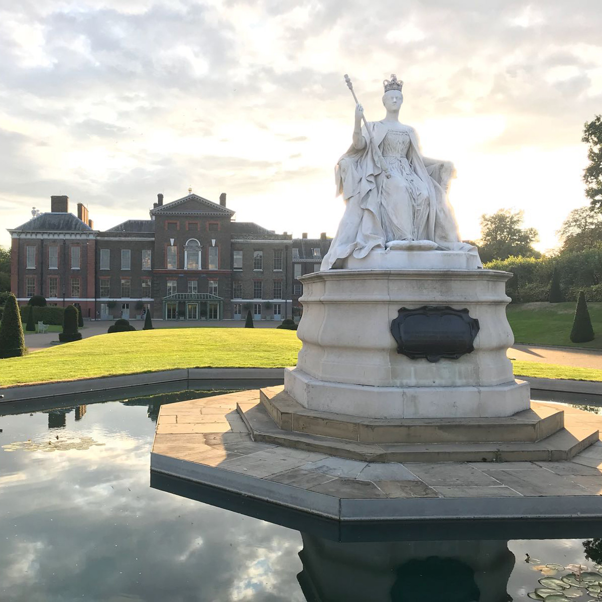
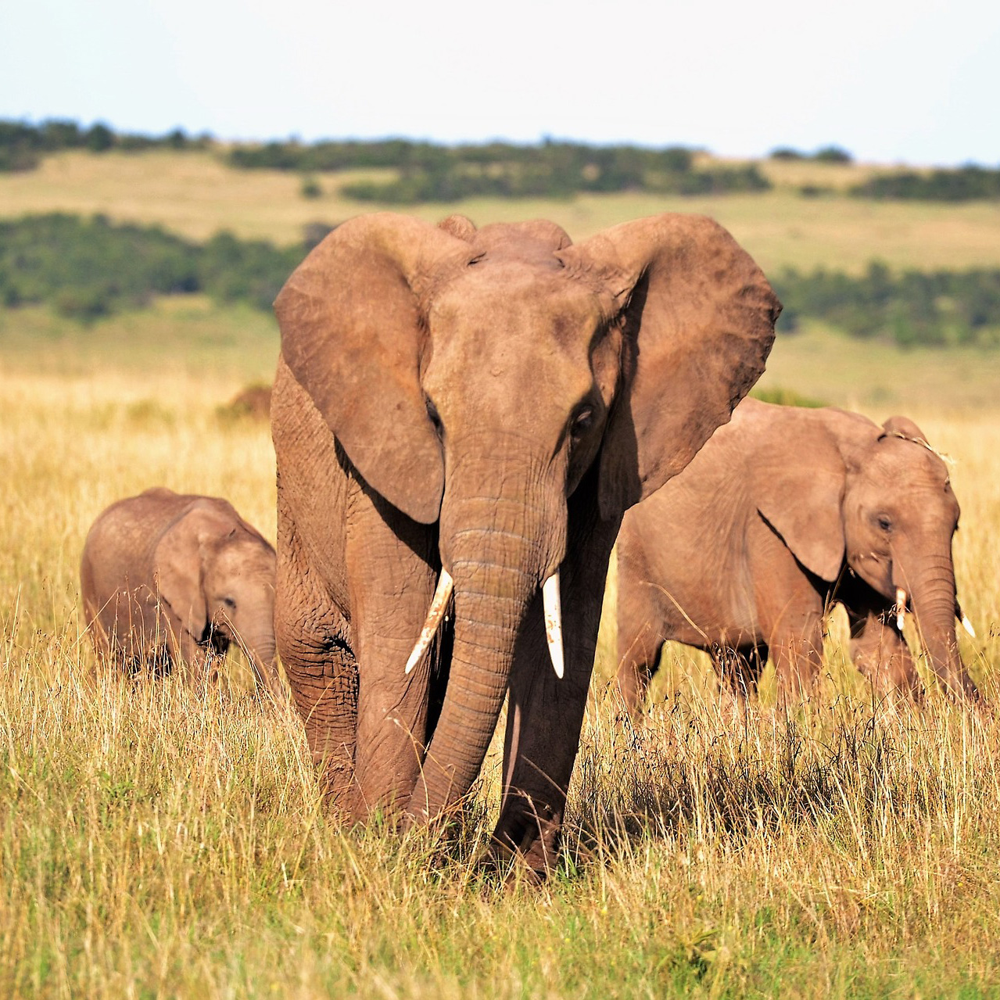
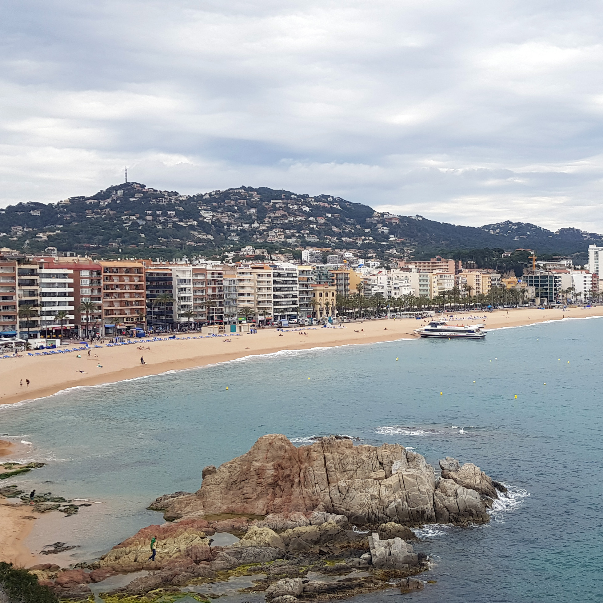
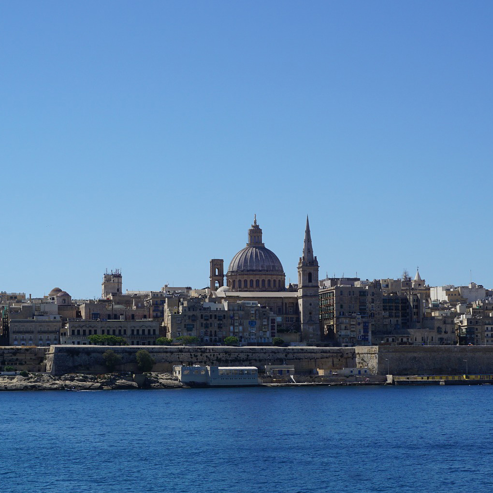
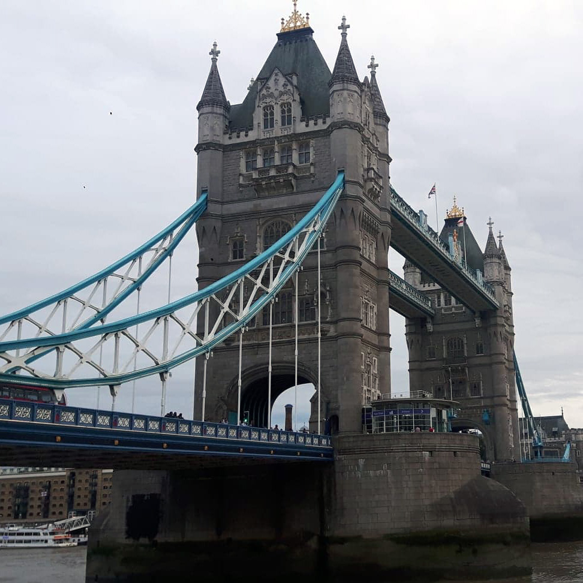

DESTINATIONS
If you’re one of people looking to breathe fresh air, drink from paper or metal straws, and recycle like your life depended on it, choose one of these awesome places and live your best eco-friendly life.
By Weronika Kiljańczyk
WHERE DO YOU WANT TO GO?

SPAIN

MALTA

THE UK

KENYA
SPAIN
Over the last few years, Spain’s eco-friendly initiatives have changed drastically, and for the better. Between the super streamlined public transit system and various ‘must see’ attractions surrounded by walking and cycle trails, eco-tourism has been heavily established and promoted. Eco farms seems to be a big thing now , places where you can camp in a Mongolian style yurt and draw your own spring water, with the perk of waking up to breath-taking scenery and fresher because they care about their green regions.The 361% increase in patents for inventions related to renewable energies between 2004 and 2015 might have something to do with it.
MALTA
Small island but with high energy and effort for eco-friendliness. Much of the revenue for Malta comes from agritourism trips, experiences where you can see the land and learn traditional farming techniques from locals. And a superior train system makes it easy to travel between towns, so you can be sure to check out the capital’s beautiful architecture. Secret gardens and natural pools located throughout the island make for a cherry on top of an eco-friendly getaway.
UNITED KINGDOM
So many pockets of the United Kingdom are known for and continue to establish a reputation of being eco-friendly. Nearby Wales, for instance, is home to the Centre for Alternative Technology, a sustainable community founded in the mid 1970s that features environmentally responsible buildings. Also they have this amazing water balanced cliff railway that overlooks crazy mountain and valley views. And then there’s the small Eigg Island that doesn’t need outside help from anyone to stay fully eco-friendly. The island is practically all electric and power operated by renewable sources of solar, hydroelectric and wind. They even said bye bye to diesel generators in 2008, thanks to Eigg Electric LTD.
KENYA
Over the years, Kenya has developed a number of voluntary programs to support and demonstrate its commitment to sustainable tourism: Eco-rating scheme, eco-warrior awards, Green destination guidelines all under the Global Sustainable Tourism Council but adapted to Kenya’s socio-cultural and environmental realities. Also many hotels and lodges away from the cities are investing in alternative energy sources. Even though the country has lost many animals to illegal poaching, organisations within the country have done their best to make sure travellers respect the ecosystem.